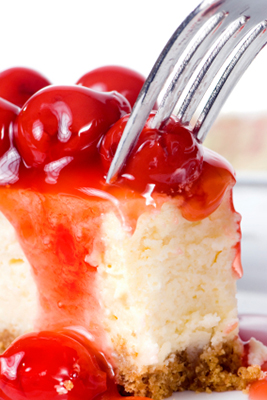

Welcome to Native Cooking of Utah
Welcome to Native Cooking of Utah! If you love to cook like we do, you should enjoy looking around this site. Take a look at our Recipes and take the opportunity to complete our survey.
Featured Recipes



Featured Tribute

"Whenever I am at a loss about what to cook for dinner, I just go to your web site and I can always find an answer. The ingredients of your recipes are always reasonably priced so I won't have to worry about busting my budget. I was nervous about trying to make my own ice cream, but your Bear Lake Raspberry recipe made me brave enough to try it. The step by step directions were easy to follow and my kids really loved the ice cream...
Bernice Cooks
Orem, UT